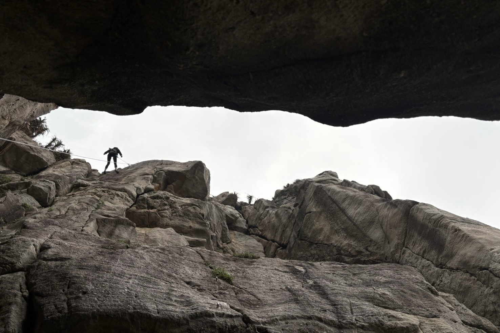
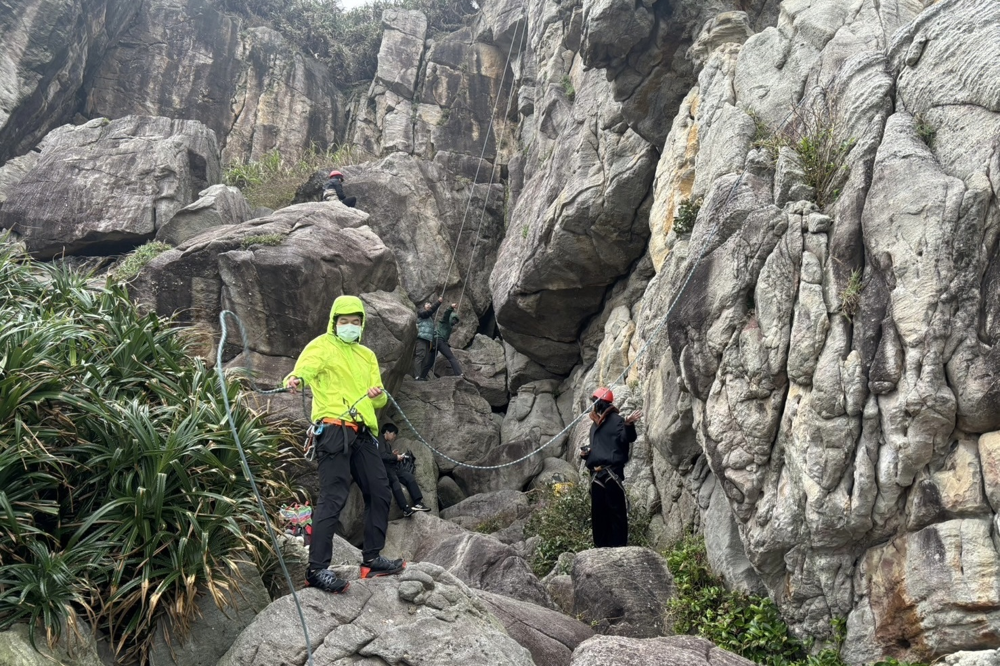
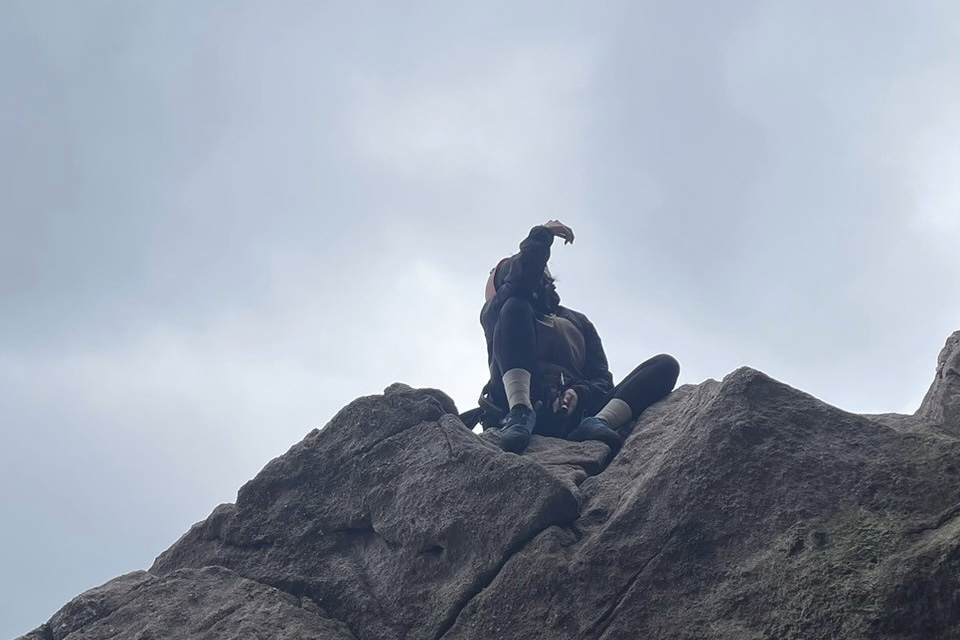
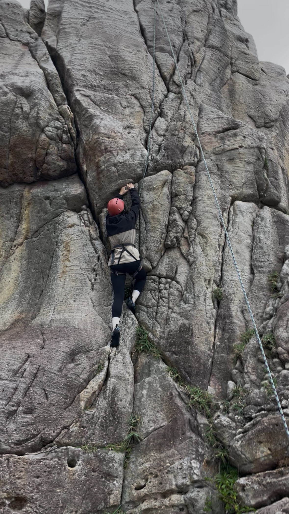
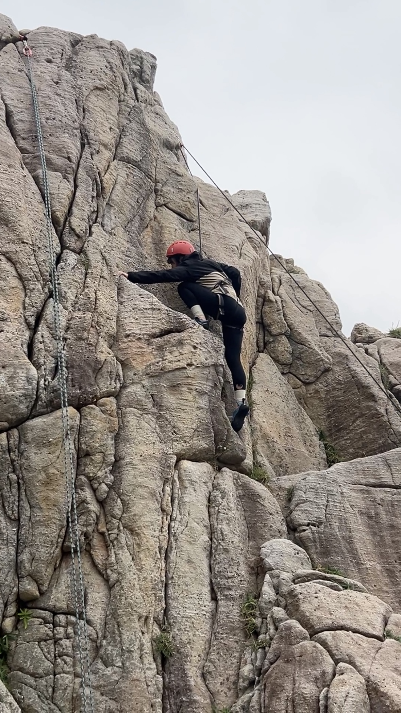
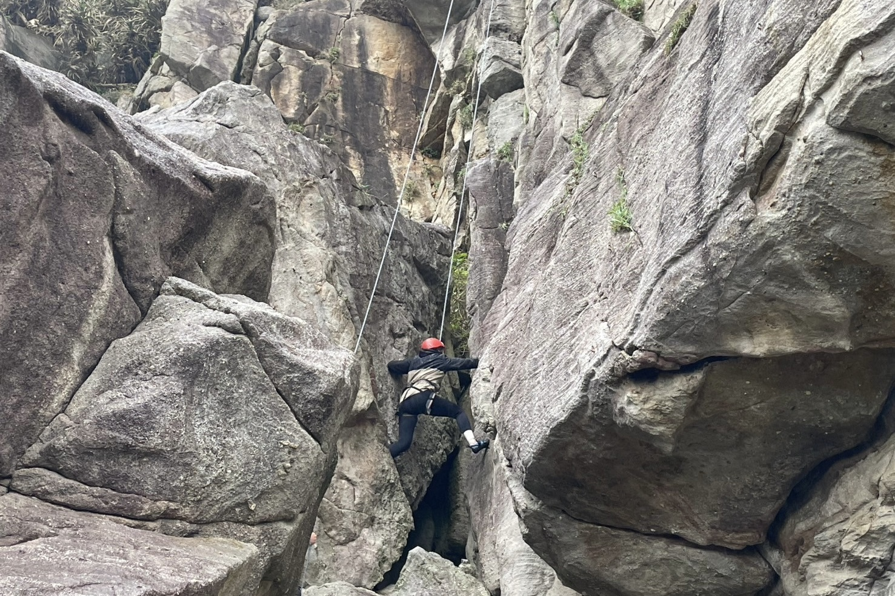
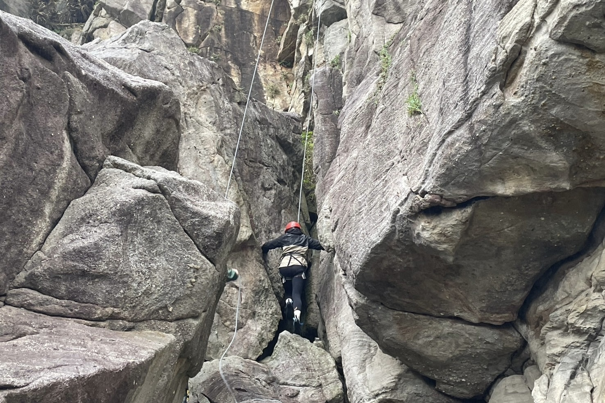

龍洞攀岩

龍洞攀岩
日期：2024年12月22日（一日行程）
【心得】
衣物（保暖、防風、防雨）

個人覺得今天的洋蔥式穿搭（heat tech、刷毛中層、風雨衣）足以應付攝氏12-13度的風雨天氣（風速15，毛毛雨）。
基本上整個活動過程中都沒有感覺到冷或失溫，處在一個不冷不熱的平衡狀態。個人比較偏向這種狀態，不太喜歡過於溫暖甚至會微微出汗的狀態。若風吹來時會感覺到微冷也是可以接受，但出汗無法。甚至在攀爬第三條路線時，還爬到有點熱，不過在這個天氣下很快又冷下來了。
戶外活動時，只要中內層保暖足夠，外層防風防雨，基本上沒什麼問題。如果溫度更低的話，可能就適當地更換更保暖的中內層，或有內搭的外層衣物，以達到更好的保暖效果。
然後我也有帶雨褲，在回程的時候因為有小飄雨，所以有把雨褲穿起來（想說帶都帶了，那還是用一下好了）。
鞋子的部分，一般運動鞋還是無可避免的有點滑，且不適合走在岩石上。然而我也不認為登山鞋是一個好的選擇，至少在岩石地面上，我的體感是運動鞋跟登山鞋的表現差不多，但如果是在濕滑的泥土地，當然是登山鞋的黃金大底更勝一籌。或許在海邊的岩石地面上，溯溪鞋才是正解。
個人覺得也有一點是心理因素，因為一直想著這雙鞋會很滑，所以沒有辦法好好地走路，而且實際走起來也沒想象中那麼滑跟難走。本來以為龍洞海岸線的石頭會像蘭嶼的一樣尖銳，顯然在蘭嶼的襯托之下，龍洞的石頭更顯柔和親人。
食物
因為在飲控的關係，所以這次在食物的準備上，沒有那麼的為所欲為，也沒有買麵包等等的糖油混合物。
7點半左右吃早餐；10點半在攀爬完第一條路線後補充了一個飯糰；在攀爬完第三條路線後吃了半條手卷；去餐廳的路上把剩下半條手卷吃完；在餐廳吃了一碗白飯跟一些菜，不小心喝到了有糖的芭樂汁，但只喝了一杯所以也還好。
以這個進食的節奏以及份量來說，足以讓我應付今天的攀岩活動。半天下來基本上不太會有特別餓，或餓到沒力的情況出現。甚至感覺自己還可以再爬，但天公不作美。
事實證明其實只要吃到基礎代謝就已足夠提供一天的能量，並不需要把自己吃到撐或吃到吐。今天正好是飲控的第一週，感覺這一個禮拜下來，雖說在飲控但也不會覺得過得很痛苦。除此之外好像也可以感覺到身體的變化。
裝備
雷射筆一如既往的很好用（特別是綠色的），射程夠遠且足夠清晰。
手套沒有用到，後來借了隊友的胶帶代替。
貼胶帶的方式有一點點講究：胶帶可以多纏幾圈以免攀爬過程中因為磨擦而脫落，胶帶接口盡量在手背上，一樣可以防止磨擦時胶帶脫落。
我自己是第一到第二指節的位置會容易因為磨擦而覺得痛，所以貼胶帶的時候可以注意這些位置。不過胶帶貼在指節位置唯一的缺點是，活動會有點受限。
確保者與攀爬者視角

發現身處岩牆上及岩牆下的視角十分不一樣。在岩牆下方觀察時，會覺得某些位置、縫隙很好踩/抓，或空間很大，但當我站到岩牆上時發現，那些我在下方以為能踩/能抓的點其實都不如想像中好踩/抓，那些我以為很大的平台/空間，其實在岩牆上只是一個小小的突起。
具體還可以表現在，當攀爬者向確保者救助，而確保者嘗試給予攀爬者指示時。我用雷射筆指向我以為能夠抓握的點，然而隨後當我自己上去就發現在牆上時根本沒有辦法抓/踩那個點。
以上是我在觀看和實際體現時覺得很微妙的部分，我們要如何在視角的不一樣的情況下為攀爬者找到好踩/好抓的點？
攀爬感受
這次攀岩設了三條路線，兩短一長，基本上除了第二條短的路線之外，其餘兩條路線我都有嘗試兩次。第一次是初嘗試，比較多蠻力部分；第二次則是希望能否在第一次的基礎上，找到更省力更適合自己甚至說更「美」的攀爬方式。

第一條路線中間有一個突起處，在下面的時候一直在想等等上去之後腳要踩哪踩哪，結果真的上去之後發現剛想好的點根本沒法踩。第一次攀爬時，更多是靠著確保者的確保，慢慢蹭上去。第二次攀爬時，比較不迷惘，但在通過突起處時，還是硬幹佔大多數。但第二次的時候更有意識地去熟悉跟摸索這面牆，去探索哪些地方是更好的抓握點。

第二條路線只要在平台位置克服心理上的恐懼，勇敢地站上去，基本上都沒什麼困難的地方，整條都蠻好爬。平台主要令人恐懼的部分在於，在下面看的時候以為平台很大很好踩，結果上去之後發現平台比想像中還要窄，而且兩個平台之間沒有任何過渡，會讓人有種會踩空的感覺。但我是沒差啦，只要有繩子在，我就不會死，頂多受點小傷。而且在攀爬的時候，腎上腺素的作用下讓我無暇顧及除了攀爬以外的事情，例如我現在身處的高度之類的。有點像是進入了一種心流狀態的感覺。

第三條路線，第一次爬的時候比較迷惘，中途因為沒力休了兩次，有些路段是在老師的確保下慢慢蹭上去的。這條路線的難點是一開始要用煙囪爬法，在岩壁之間將四肢盡可能地撐開，以固定自己的身體（像蜘蛛人一樣）。同時緩慢地往上移動，直到到達第一個平台。到達平台後，後面基本上只要順著裂縫往上攀爬就好，雖然有些位置的踩點和握點不明顯，但也不算很難攀爬。

第二次爬的時候開始去尋找更好的握點和踩點。因為手比較沒有力氣的關係，第二次攀爬時傾向去找更穩定的踩點，讓我可以用腳發力蹬自己上去。然後手盡量往高的地方握，伸直的手臂會比彎曲的手臂更為省力。手臂伸直，腳用力蹬，人往上走，尋找下一個握點。
除此之外也發現有些地方可以用卡的（jam），用手或腳或某些身體部位，將自己卡在岩壁裏借力。例如說將腳卡在裂縫裏，借力往上。然後有些地方可能要反握，用撐的方式將自己撐上去之類的。反正就是攀岩不止一種方式，在發現這件事後，瞬間對攀岩著了迷。還有就是，如果不想腳一直打滑，或手臂力量不足，可以先找好腳點，看好等等要踩的位置。
目前為止，我覺得我攀岩都會有點急，可能急著登頂，急著證明自己，或怕爬太久浪費別人的時間之類的（當然不會）。在這個狀態下，我很常會還沒找好踩點，手就已經伸上去，然後將自己往上拉，但當手已經上去，但腳還沒跟上時，很常會出現腳找不到地方踩，或腳一直在打滑的情況。所以可能對我來說，先站穩腳根，再往上爬是更好的方式，也比較省力，不用手臂撐住然後腳一直在那邊找踩點。我也很享受這樣在岩牆上慢慢探索的感覺，像是跟這面牆建立了某種連結，走的時候還有點依依不捨。
「你之前試過戶外攀岩嗎？」「沒有，我只是有點過動。」攀岩讓我有種找到歸宿的感覺，原來喜歡跑跳、攀爬可以不是一個缺點。
← 返回前頁